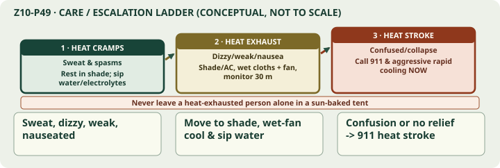

Z10-P49 · Wilderness medicine · New manuscript
Cool and hydrate alert heat-exhaustion patients before heat stroke develops
Halt heat-exhaustion progression rapidly with shade, active cooling, and measured oral hydration while watching for neurological red flags.
When it applies · Heavy exertion or high heat/humidity producing heavy sweating, weakness, dizziness, headache, nausea, muscle cramps, or cool clammy skin.
Equipment · Shade tarp or air-conditioned vehicle/building, cool wet cloths, fan/airflow, and safe cool drinking water or labeled electrolyte drink.

Actions
- Stop all exertion immediately at the first heat-exhaustion signs, move the person into shade or air conditioning, loosen heavy clothing/packs, and lay them down slightly elevated feet if dizzy.[E08, T05, M17]
- Cool actively by applying cool wet cloths or misting cool water over skin while fanning air across the body, and offer small steady sips of cool safe water or labeled oral rehydration solution ONLY while fully alert and not vomiting.[E08, M17]
- Monitor mental clarity continuously—never leave a heat-exhausted person unattended to "rest in a hot tent," because heat exhaustion can deteriorate silently into fatal heat stroke.[T05, T09, E19]
Failure recognition · Leaving a nauseated, dizzy hiker alone inside a sun-baked tent where trapped heat pushes core temperature into heat stroke.[E19, T09]
Verify · Confirm active cooling is working, nausea/dizziness improve within 30 minutes, and mental status remains completely sharp.[T05, M20]
Stop or change course · Any confusion, slurred speech, vomiting, fainting, worsening symptoms, or failure to improve within 30–60 minutes escalates immediately to 911 heat-stroke emergency cooling.[T05, T09]
Evidence and editorial notes
- E08 · CDC · About Heat and Your Health (current web edition)
- Section: Protect yourself from heat · Conditions: Outdoor activity in hot conditions
Support: Limit exertion in hot periods, take breaks in cooler places and monitor for illness.
Limitations: High humidity reduces sweat evaporation and raises heat strain at lower air temperatures. · Conflicting evidence: None; aligns with NWS-HEAT and NIOSH-H.
Editorial note: Anchors shade, pacing, and hot-weather shelter selection. · Specialist reviewer: Heat illness and emergency medicine
Primary source · checked 2026-11-24 - E19 · NWS · Heat Safety (current web edition)
- Section: Heat Safety Resources · vulnerability and linked protective actions · Conditions: High temperature and humidity outdoors
Support: Use current heat alerts and reduce exposure or seek cooled shelter when conditions warrant.
Limitations: This landing page does not quantify tent warming or universal evaporative cooling. See D21 for the bounded indoor fan guidance. · Conflicting evidence: None; aligns with CDC-HEAT and READY-HEAT.
Editorial note: Drives warm-weather tarp/shade configuration and ventilation cards. · Specialist reviewer: Heat safety and shelter design
Primary source · checked 2026-11-24
Current assessment · A04-E19 (2026-11-25) · Bounded support confirmed (A04): Follow local alerts and reduce exposure with appropriate cooling. Clinical heat injury, device limits and conflicting threats remain separate. Limits: Specialist review PENDING (Heat safety and shelter design); publication HOLD. All release decisions pending. - M17 · NIH / MedlinePlus · Dehydration (current web edition)
- Section: Dehydration Recognition, Oral Rehydration, and Red Flags · Conditions: Heat exertion, prolonged diarrhea, vomiting, or inadequate water intake
Support: Encourage small frequent sips of safe potable water or labeled oral rehydration solution in alert patients able to swallow; evacuate urgently for confusion, inability to keep fluids down, sunken eyes, or minimal dark urine.
Limitations: Severely dehydrated or altered patients cannot safely rehydrate by mouth alone. · Conflicting evidence: None; avoids unverified homemade salt-sugar ratio guesswork when labeled packets exist.
Editorial note: Links hydration monitoring to medical evacuation triggers. · Specialist reviewer: Wilderness medicine and internal medicine
Primary source · checked 2026-11-24 - M20 · NIH / MedlinePlus · First Aid Overview (current web edition)
- Section: Lay First-Aid Scope, Kit Readiness, and Documentation · Conditions: Pre-trip kit preparation and remote patient monitoring
Support: Maintain an inspected, unexpired first-aid kit matched to your actual training, keep written patient observations (time, responsiveness, breathing, symptoms, interventions) for EMS handoff, and practice skills in certified courses.
Limitations: Carrying advanced medical instruments without clinical training adds risk rather than capability. · Conflicting evidence: None; aligns with ARC and NPS-K.
Editorial note: Anchors kit sizing, SOAP-style lay observation logs, and scope-of-practice cards. · Specialist reviewer: Wilderness EMS and clinical education
Primary source · checked 2026-11-24 - T05 · CDC NIOSH · Heat-related Illnesses (current web edition)
- Section: Heat stroke > First aid · Conditions: Heat exposure and altered mental status
Support: Heat illness may be life-threatening. Seek emergency care for suspected heat stroke and start cooling promptly.
Limitations: Delays in active cooling worsen neurologic outcomes. · Conflicting evidence: None; aligns with CDC-HEAT.
Editorial note: Core heat-emergency escalation rule. · Specialist reviewer: Emergency and wilderness medicine
Primary source · checked 2026-11-24 - T09 · CDC NIOSH · Heat-related Illnesses (current web edition)
- Section: Heat stroke > Symptoms and First aid · Conditions: Suspected heat stroke after exertion or heat exposure
Support: Confusion, slurred speech or loss of consciousness can indicate heat stroke. Call 911 and cool the person promptly.
Limitations: Exertional heat stroke can occur even in moderate ambient temperatures during heavy effort. · Conflicting evidence: None; aligns with T05.
Editorial note: Triggers immediate emergency call and cooling stop condition. · Specialist reviewer: Emergency and wilderness medicine
Primary source · checked 2026-11-24
Source lineage · CDC Heat Health and NIOSH Heat-Related Illnesses; new manuscript · Classification · New manuscript.